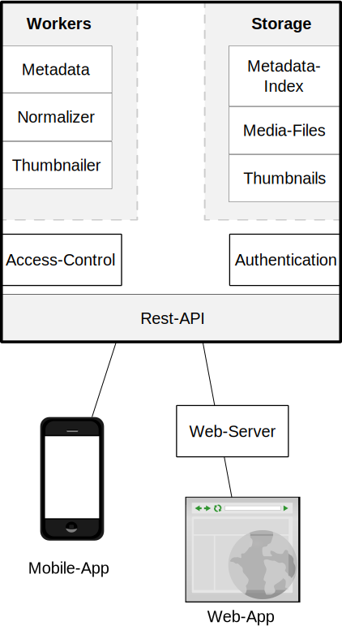

The core of gachō will run a modular architectur that can be extended by plugins.

The following interfaces (will) exist:
- The Rest-API is the outer interface for use by the web-frontend and by other applications.
It should provide the following functions:
- Upload media-files to the storage.
- Download original media-files
- Download thumbnails in different sizes
- Find media-files through meta-data and via full-text-search
- Modify the meta-data of media files
- The Normalizer-Plugin-API is called on the original file when it is uploaded. Normalizer-Plugins
convert the media-file before it is stored into the media-storage. The goals are:
- Reduce the number of file-formats that the other plugins have to deal with
- Apply streaming-friendly modifications such as qt-faststart
to h264-videos
- Ensure that stored media-files are able to store the appropriate metadata-tags (like
XMP:HierarchicalSubject
to store tag data)
- The Thumbnailer-Plugin-API is called to generate thumbnails of media-files in different sizes. Thumbnails
are generated when an image is uploaded (lazy-thumbnailing on download is too slow, when many files
(especially videos) are involved and when the server has restricted computing power.
- The Metadata-Plugin-API is called to read and modify metadata, like creating date and tags, of media-files (either during the
upload-process or due to editing-actions by the user.
- The Metadata-Index-Plugin-API is used to store the metadata of media-files into a searchable database.
it is also used to find files based on their metadata.
- The Media-Storage-Plugin-API is used to store and retrieve the actual media-files.
- The Thumbnail-Storage-Plugin-API is used to store and retrieve thumbnails.
- The Authentication-Plugin-API is queried when a user tries to log in. Authentication-Plugins can be used to implement
different mechanisms.
- The Access-Control-Plugin-API is used to determine whether a user may see a media-file or not. It must be queried by
other plugins, for example to filter search results, and when downloading an image or video.
Generally, gachō will provide a simple default plugin for each API (like storing media-files in a filesystem),
but it will be possible to add more sophisticated ones (like using Amazon S3-Buckets).
The general idea is to store all relevant metadata inside the media-file. That way, the whole database
can be rebuilt just by adding all media-files. This also makes it easy to migrate from and to other
systems (like Digikam). The Metadata-Index only exists to provide search capabilities.
Of cource, there may be different implementations of the Metadata-Index that enrich the metadata (e.g. allow
to store and search relations between tags). Such data will have to be backupped and upgraded by the plugin
itself. The plugin may also need to extend the Rest-API and the web-interface to allow editing such meta-metadata.
on APIs
All APIs other than the Rest-API are internal. It will be possible to register plugins (also multiple plugins
per API) that are called on after another.